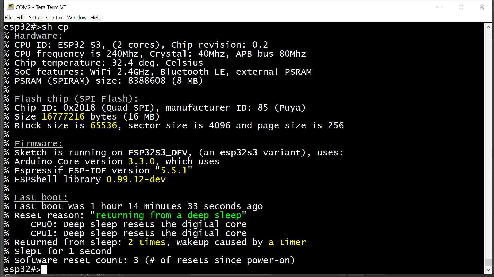

Процессор ESP32 поддерживает изменение частоты во время выполнения. На классическом ESP32 основная частота CPU также может влиять на частоту шины APB: если частота CPU опускается ниже 80, то частота APB будет равна частоте CPU. Это повлияет на все тайминги ШИМ и других модулей, но вам не нужно об этом беспокоиться: ESPSHell пересчитывает все тайминги при изменении частоты APB.
| Команда | Описание и примеры |
|---|---|
| cpu |
Отображает список поддерживаемых частот: esp32#>cpu % Supported frequencies are: 240, 160, 120, 80, 40, 20 and 10 MHz esp32#> |
| cpu FREQ |
Устанавливает частоту CPU в FREQ МГц (например, 240). ESP32 поддерживает частоты 240, 160 и 80 МГц. В зависимости от частоты кварцевого генератора (XTAL) могут быть доступны и другие варианты, такие как XTAL / 4 и/или XTAL / 2. Если задана неподдерживаемая частота, ESPShell отобразит список допустимых значений:
esp32#>cpu 1
% 1 MHz is an unsupported frequency
% Supported frequencies are: 240, 160, 120, 80, 40, 20, and 10 MHz
% Invalid 1st argument "1" ("? cpu" for help)
|
show cpuid
Отображает информацию о железе и программном обеспечении:

Рис. 1: Вывод команды "show cpuid"
Вывод разделён на четыре секции: Аппаратная часть, Flash, Прошивка и Последняя загрузка. Первая секция показывает CPUID, частоту CPU, частоту XTAL, частоту шины APB и температуру ядра CPU.
Вторая секция содержит данные о flash-чипе: его размер и ID производителя.
Секция прошивки показывает версии компонентов, использованных при сборке прошивки/скетча, включая версию Arduino core (несоответствие версий — частая причина проблем), версию ESP-IDF и номер версии ESPShell.
Последняя секция включает вывод команды "uptime", отображающей время работы системы и причину последней перезагрузки.
ESPShell предоставляет две команды для отображения информации о памяти: show memory и show memory ADDRESS ...
| Команда | Описание и примеры |
|---|---|
| show memory |
Отображает общий объём и доступную память, видимую из скетча:
if using malloc() - информация относящаяся к стандартному аллокатору (т.е. malloc, calloc, realloc, strdup, new и free) |
| show memory ADDRESS |
show memory ADDRESS [ COUNT ] [signed|unsigned|float|void*|int|char|short] Отображает содержимое памяти, начиная с указанного адреса. Адрес должен быть в шестнадцатеричном формате, с префиксом "0x" или без него. В самой простой форме эта команда требует только один аргумент — адрес. Результатом будет дамп 256 байт, начиная с указанного адреса. Обратите внимание, что архитектура памяти ESP32 достаточно сложна: некоторые области доступны только через шину инструкций, некоторые — только с ядра CPU#0 (ESPSHell обычно работает на ядре #0), некоторые — только при доступе как к 32-битным словам и т.д. Espressif предоставляет документы с описанием карт памяти конкретных моделей ESP32: для ESP32-S3, для ESP32 и т.д. Пример: Показ содержимого памяти начиная с адреса 0x3fc97a30
esp32#>sh mem 0x3fc97a30
0 1 2 3 4 5 6 7 8 9 A B C D E F |0123456789ABCDEF
----------------------------------------------------------+----------------
0000: 01 00 00 00 02 00 00 00 03 00 00 00 9d ff ff ff |................
0010: 0c 0c 03 00 0b 00 00 00 5c 32 ca 3f 00 00 00 00 |........\2.?....
0020: 14 0e 09 3c 2c 2b ff ff 00 c2 01 00 1c 00 00 08 |...<,+..........
0030: 00 01 00 00 00 70 00 00 00 00 00 00 01 00 00 00 |.....p..........
0040: 00 00 00 00 ff ff ff ff 00 00 00 00 00 00 00 00 |................
0050: 00 00 00 00 00 00 00 00 00 00 00 00 02 00 00 00 |................
0060: 00 00 00 00 ff ff ff ff 00 00 00 00 00 00 00 00 |................
0070: 00 00 00 00 00 00 00 00 c8 7a c9 3f ff ff 3f b3 |.........z.?..?.
0080: 00 00 00 00 03 00 00 00 00 00 00 00 00 00 00 00 |................
0090: 00 00 00 00 00 00 00 00 00 40 00 60 c8 bb 07 3c |.........@.`...<
00a0: 00 00 00 00 cc bb 07 3c 00 00 00 00 d0 bb 07 3c |.......<.......<
00b0: 00 00 00 00 d4 bb 07 3c 00 00 00 00 d8 bb 07 3c |.......<.......<
00c0: 00 00 00 00 dc bb 07 3c 00 00 00 00 e0 bb 07 3c |.......<.......<
00d0: 00 00 00 00 e4 bb 07 3c 00 00 00 00 e8 bb 07 3c |.......<.......<
00e0: 00 00 00 00 ec bb 07 3c 00 00 00 00 f0 bb 07 3c |.......<.......<
00f0: 00 00 00 00 f4 bb 07 3c 00 00 00 00 f8 bb 07 3c |.......<.......<
esp32#>
Команда поддерживает необязательные аргументы — рассмотрим их Необязательные аргументы: количество и типЧтобы задать количество элементов, используйте аргумент COUNT:
esp32#>sh mem 0x3fc97a30 32
0 1 2 3 4 5 6 7 8 9 A B C D E F |0123456789ABCDEF
----------------------------------------------------------+----------------
0000: 01 00 00 00 02 00 00 00 03 00 00 00 9d ff ff ff |................
0010: 0c 0c 03 00 0b 00 00 00 5c 32 ca 3f 00 00 00 00 |........\2.?....
esp32#>
Если COUNT не указан, по умолчанию будет показано 256 байт Чтобы интерпретировать данные как определённый тип, укажите один из следующих типов: "signed", "unsigned", "char", "short", "int" или "void *". При указании типа COUNT по умолчанию становится равным 1 вместо 256. Тип "void *" используется для 32-битного дампа в шестнадцатеричном виде. Некоторые области памяти ESP32 можно читать только как 32-битные слова: esp32#>sh mem 0x50000000 void * % 0x50000000 : 0x344dbbe1 esp32#> ПРИМЕЧАНИЕ: хотя аргумент COUNT в приведённом выше примере не указан, ESPSHell выводит только 1 элемент, так как был задан тип (void *). Если вы хотите увидеть больше элементов, COUNT нужно задать явно: esp32#>sh mem 0x50000000 10 void * % Array of 10 elements, 4 bytes each % Address : Value % 0x50000000 : 0x344dbbe1 % 0x50000004 : 0x9d2aa486 % 0x50000008 : 0x476c2e42 % 0x5000000c : 0x40da87ea % 0x50000010 : 0x607b4d64 % 0x50000014 : 0xfc28182e % 0x50000018 : 0x97b54ec4 % 0x5000001c : 0xefe11d7a % 0x50000020 : 0xd703bad6 % 0x50000024 : 0x698b7ad1 esp32#> ПРИМЕЧАНИЕ: типы "void *", "void*" или просто "*" — все они означают одно и то же: данные будут интерпретированы как беззнаковые 32-битные значения и выведены в шестнадцатеричном формате Эта команда может быть использована для отображения содержимого массивов и переменных скетча, если известны их адреса Пример: Массив беззнаковых целых чисел расположен по адресу 0x3fc97a30. Показать первые 3 элемента массива esp32#>sh mem 0x3fc97a30 3 unsigned int % Array of 3 elements, 4 bytes each % Address : Value % 0x3fc97a30 : 1 (0x1 as hex) % 0x3fc97a34 : 2 (0x2 as hex) % 0x3fc97a38 : 3 (0x3 as hex) esp32#> |